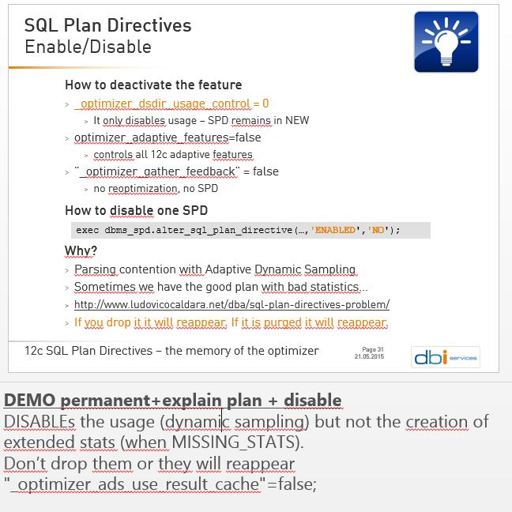

|
|
This was first published on https://blog.dbi-services.com/sql-plan-directive-disabling-usage-and-column-groups (2015-12-03)
Republishing here for new followers. The content is related to the the versions available at the publication date
Yesterday I came upon a comment on oracle-l while I was reading my slides for the UKOUG TECH15 SuperSunday. I’ve one slide and one demo about disabling SPD usage but that’s not enough to explain all variations of what ‘usage’ means here. The comment on Oracle-L was: Seems like even after disabling sql plan directives they are still used by dbms_stats to create extended statistics and my slides (with presenter notes) is: 
Basically when we talk about SPD usage we are talking about the Dynamic Sampling that is triggered by a MISSING_STATS or PERMANENT state SPD. We are not talking about the column groups that are created by dbms_stats when it encounter a ‘MISSING_STATS’ SPD in the hope to get better estimation and have finally the SPD as HAS_STATS until it is purged by Auto Drop. (if you find that sentence too long, please come to my presentation on Sunday, there’s a demo and a diagram about those states)
Let’s see the different ways we can disable SQL Plan Directives usage, and what is the consequence on dynamic sampling and column groups.
The default behaviour is that a misestimate creates a SPD in NEW, and future optimizations will ‘use’ the SPD, doing dynamic sampling. When misestimate is confirmed, state is MISSING_STATS. At that point, dbms_stats may create column groups. Future optimizations can set the state in HAS_STATS or PERMANENT depending on whether the misestimate is fixed by the column group statistics. You may want to disable that normal behavior because:
You see the usage from the execution plan:
Note: - dynamic statistics used: dynamic sampling (level=2) - 1 Sql Plan Directive used for this statementand you see the column group from :
SQL> select extension_name,extension from user_stat_extensions where table_name='DEMO';
EXTENSION_NAME EXTENSION
---------------------------------------- ----------------------------------------
SYS_STSPJNMIY_SDQK5$W04PFYKBIW ("A","B","C","D")
SQL Plan directives being a 12c feature, you can disable all 12c optimizer features. Actually, this is the same as setting “_optimizer_dsdir_usage_control”=0 so you can see below that it doesn’t disable all SPD behavior.
Look at the name and the description: controls optimizer usage of dynamic sampling directives It disables only the usage. Not the creation of SPD (status NEW) and not the creation of column groups (if you already have a SPD in MISSING_STATS). So if you have no SPD at all (all dropped) and you set “_optimizer_dsdir_usage_control”=0 then you will see SPD created but not used. Which means no dynamic sampling coming from SPD. And because they are not used the state remains in NEW and no column groups are created.
However, if you already have SPD or set this at session level only, you may have unexpected behaviour.
This disables all adaptive features of the optimizer and that’s probably too wide. It achieves our goal as it even disables the creation of SPD, but it also disables Adaptive Plan, which is a very nice feature. I haven’t seen any bad effect of Adaptive Join until now (please comment if you had bad experience with it).
I tried to disable adaptive feature and then enable the adaptive plans only:
SQL> alter session set optimizer_adaptive_features=false; Session altered. SQL> alter session set "_optimizer_adaptive_plans"=true; Session altered.but it doesn’t work. Adaptive Plan remains disabled.
SPD are created when a Auto Re-optimization occurs, which is an evolution of Cardinality Feedback.
If you disable Cardinality Feedback, then you will have no SPD created.
Updated 18-JUL-2016: It seems that I was wrong here. We can see SPD created even auto-reoptimization is disabled.
You might think that I’ve the same problem as above because it disables more features than only SPD, but actually I don’t like cardinality feedback, so that’s not a problem for me…
Ok, if you problem is not about dynamic sampling but only the extended stats that are coming from the column groups created, then you can disable extended statistics usage for your session or query.
I was going to write “I don’t know yet a way to disable column group creation” but then remembered about the 11g way to create column groups automatically, with dbms_stats.seed_col_usage. Actually, what it does is to set “_column_tracking_level” to 3. Then I tried “_column_tracking_level”=0 and it’s actually a way to avoid column group creation by dbms_stats. But the basic column usage will not be tracked either.
Yes you can disable the directive, but once again, this disables only the usage: not the creation of the SPD in NEW, and not the creation of column groups for MISSING_STATS. It’s similar to _optimizer_dsdir_usage_control but at directive level. Which means if the state is MISSING_STATS then column groups may be created anyway:
12:10:27 SQL> select directive_id,state,last_used,extract(notes,'/spd_note') from dba_sql_plan_directives where directive_id in(select directive_id from dba_sql_plan_dir_objects where owner='DEMO' ) order by type desc;
DIRECTIVE_ID STATE LAST_USED
------------------------------ ---------- ---------------------------------------------------------------------------
EXTRACT(NOTES,'/SPD_NOTE')
--------------------------------------------------------------------------------------------------------------------------------------------------------------------------------------------------------
17377721491866490983 USABLE 03-DEC-15 12.10.26.000000000 PM
<spd_note><internal_state>MISSING_STATS</internal_state><redundant>NO</redundant><spd_text>{EC(DEMO.DEMO)[A, B, C, D]}</spd_text></spd_note>
12:10:27 SQL> exec dbms_spd.alter_sql_plan_directive(&d,'ENABLED','NO');
12:10:27 SQL> exec dbms_spd.alter_sql_plan_directive(&d,'STATE','NEW');
12:10:27 SQL> exec dbms_stats.gather_table_stats(user,'DEMO',options=>'GATHER AUTO',no_invalidate=>false);
12:10:27 SQL> select extension_name,extension from user_stat_extensions where table_name='DEMO';
EXTENSION_NAME EXTENSION
---------------------------------------- ----------------------------------------
SYS_STSPJNMIY_SDQK5$W04PFYKBIW ("A","B","C","D")
Because of problem above, the idea is to set the state to NEW because we observed that in NEW the column groups are not created. Unfortunately, they are still created here. I tried to set LAST_USAGE to null but not better. It’s probably easy to see what is different in the underlying tables but that’s enough for this blog post…
There is something else about disabling the SPDs. If you disabled them in NEW status, they will be purged after 53 weeks and you are in the next case where they are dropped.
If you drop it (or if it’s dropped by auto drop after retention) then it will probably reappear for the same reason as it appeared the first time (misestimate) so this is not a solution.
OK, last one. Maybe you have no problem with SPD, nor extended stats, nor even with Dynamic Sampling. If you have an issue with the fact that dynamix sampling uses result cache, then you can disable that point. “_optimizer_ads_use_result_cache”=false will remove the RESULT_CACHE(snapshot=3600) hint from DS_SVC queries. But try to increase result cache size before that.
Don’t disable all 12c features, don’t disable all adaptive features. If you don’t want SPD at all, the most reliable is to drop all existing SPD and set “_optimizer_dsdir_usage_control”=0 If you want to manage them and disable some of them, then look at dbms_spd for that and monitor their state.
One more with Patch 21171382: disable creation of extended stats by dbms_stats. It adds AUTO_STAT_EXTENSIONS dbms_stats preference (defaults to OFF).
|
|
{kind=link}
Bonjour, Je suis intéressé par les différents états des SPD et les cas de changements. Dans un benchmark 12c je suis confronté à une création massive de spd (1000) Je pense les désactiver car j ai des changements de plan en permanence. Je comprends que les Stats sont imprécises. Je calcule les Stats à la volée dans les traitements sans histo sur les tables temporaires mais lors du calcul de Stats il me crée quand même les Stats étendues Mais sans histo.y a t il un moyen de laisser les histos en auto sur les colonnes groupées et laisser sans histos sur les mono colonnes.sans savoir à l avance quelles Stats étendues vont être créés. Merci de votre éventuelle aide.
Bonjour, Les états et cas de changements sont résumés ici: https://twitter.com/FranckPachot/status/704021163161288705 En 12.1 ce n’est pas si marginal de désactiver quelques SPD… Cordialement, Franck.
Merci beaucoup sur des systèmes surchargés ou sous dimensionnés votre travail et le niveau de nuances apportées est très précieux.
Great piece of information. I had a problem with lots of dynamic sampling – almost 20K dynamic sampling queries in the shared_pool and had to disable usage of sql plan directives. Thanks for sharing.
Great compilation. Thanks for sharing this!